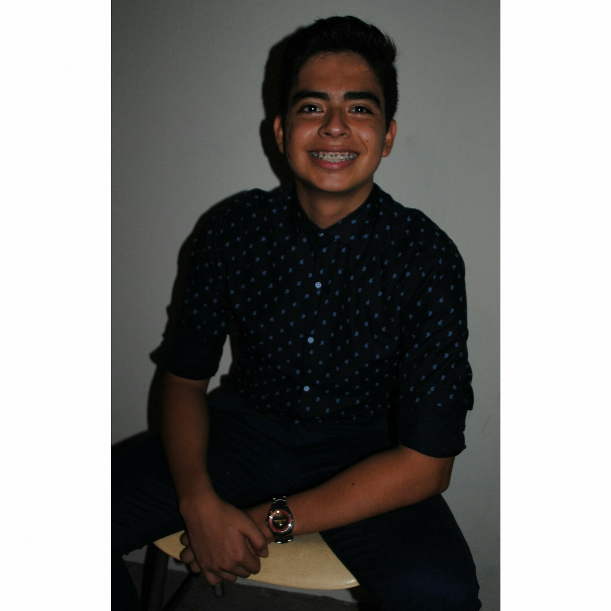
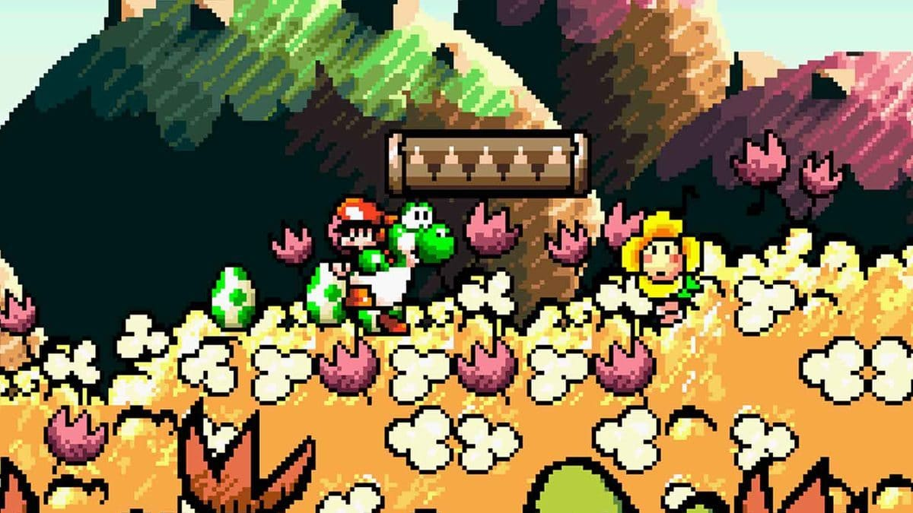
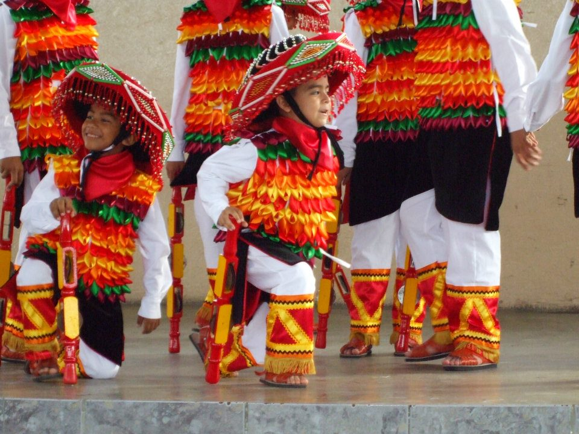
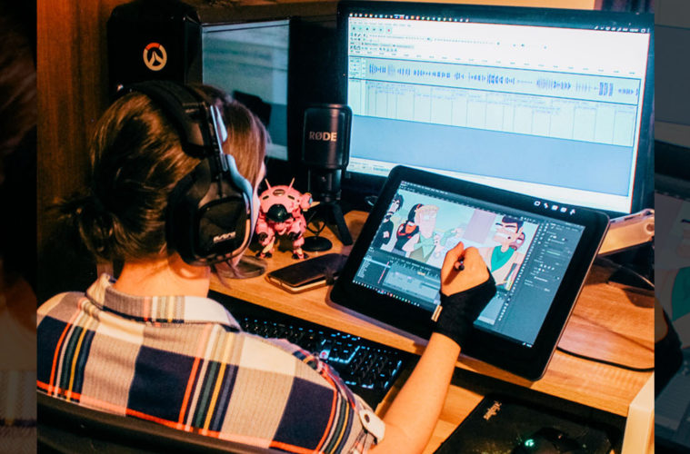
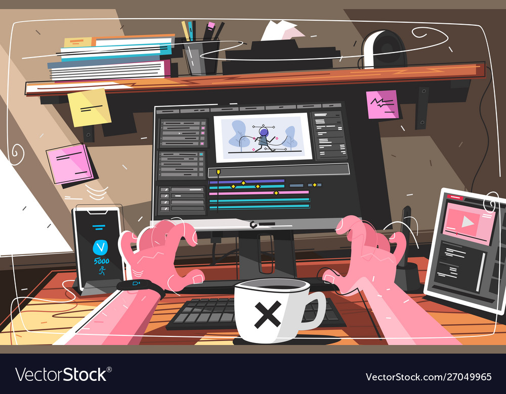
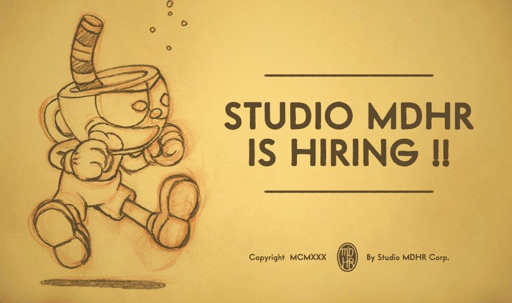
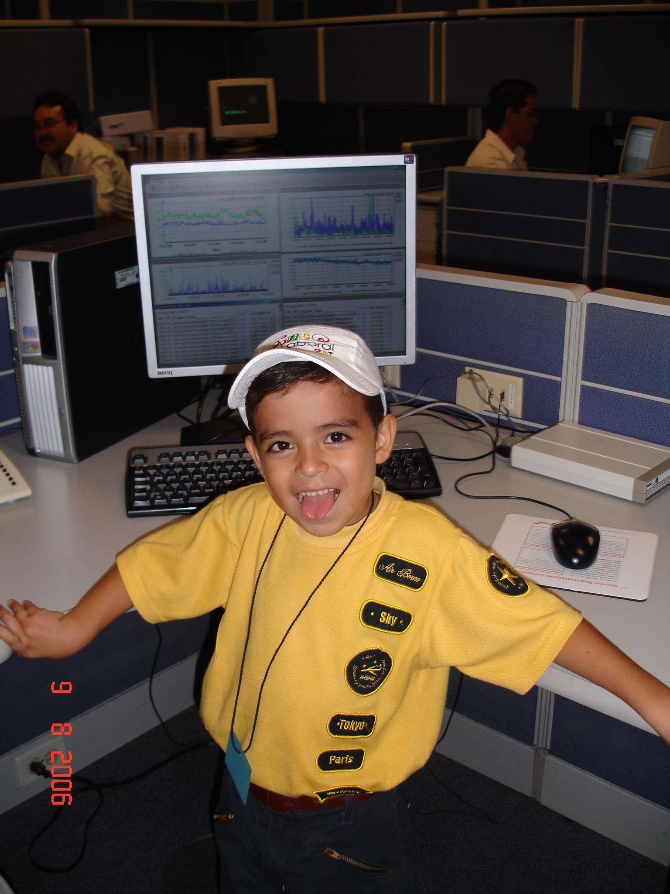

BIOGRAFIA
OSCAR IGNACIO GAUAJARDO HERNANDEZ (YOP) Mi nombre es OSCAR IGNACIO GUAJARDO HERNADEZ, nací el 18 de Diciembre del 2000
en el Hospital Muguerza a las 12:00 aparentemente. Soy hijo de IGNACIO GUAJARDO
MARTINEZ y de ESTHER HERNANDEZ PALACIOS. Desde que nací he estado acompañado por
mis hermanos mayores HECTOR MIGUEL GUAJARDO HERNANDEZ y LUCY CASSANDRA GUAJARDO
HERNANDEZ. Asi que sí, soy el menor pero no el consentido lamentablemente.
No hablaré mucho de mis pasatiempos a fondo, para ello podemos ir a esta pagina. De todas maneras, disfruto mucho de todo lo que tenga que ver con medios gráficos. Es decir, ver peliculas, series, etc. Me gusta escuchar los soundtracks de todos ellos y por supuesto jugar juegos en mis tiempos libres. Todo ellos siento que tiene que ver que desde que entré a la primaria hasta prepa me dediqué a la danza folclorica sin descanso, por tanto me desarrolle de esta manera pero como dije.. eso será un tema que se hable más profundo despues.
Por esta forma de crecimiento, soy muy ambicioso en cuanto cosas graficas. De vez en cuando dibujo o ayudo a mi hermano que es diseñador grafico con algunos trabajos solamente dando opiniones o feedback. Por ello, quería trabajar como animador profesional pero note que también era metodico y lógico asi que me vine a la Facultad de Ingenieria Mecanica y Electrica como Ingeniero en Software, por ahora no me arrepiento.
En particular no tengo algún lugar en especifico que quisiera conocer. Pero con tal de salir del país a explorar más ciudades yo estaría feliz. Me encantaría poder visitar estudios de animación o empresas grandes como Google o Facebook. Tambien me gustaría en un futuro poder visitar lugares de Europa, por lo pronto no tengo decididos cuales.

Tengo varios proyectos personales a la puerta que planeó realizar en vacaciones para poder practicar mas acerca de la programacion. Me gusta la programacoin desde que tomé mi primera computadora y me puse a pensar como manejarla y debo seguir desarrollandome en mi carrera para poder cumplir las metas que tengo.
